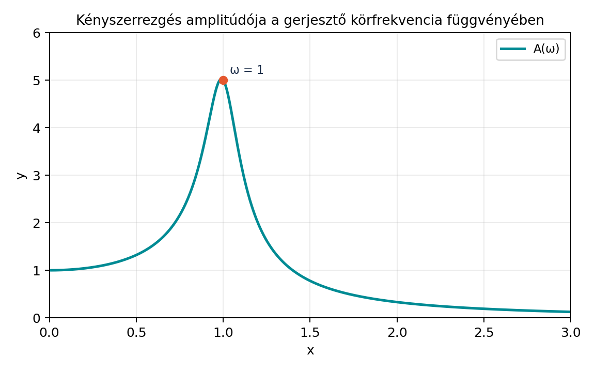

37.2 Inhomogén egyenletek:
próbafüggvény és az állandók variálása
37.2.1 Motiváció
Az előző alfejezetben (Homogén lineáris
egyenletek állandó együtthatóval) megtanultuk, hogy az
homogén egyenlet általános megoldása
ahol
a karakterisztikus egyenlet gyökeiből adódó két független megoldás. A
gyakorlatban azonban a rendszert általában külső hatás is éri: egy
rugóra periodikus erő hat, egy RLC-körre váltakozó feszültség
kapcsolódik, egy gépalapot forgó tömeg ráz. Ilyenkor az egyenlet jobb
oldalán nem nulla, hanem egy adott
gerjesztő függvény áll:
Kérdés: hogyan találjunk egyetlen megoldást? Ha
alakja egyszerű (polinom, exponenciális, szinusz, illetve ezek
szorzata), akkor a próbafüggvény-módszer célravezető.
Ha
bonyolultabb, az állandók variálása segít, feltéve,
hogy a homogén megoldást ismerjük. Ebben az alfejezetben mindkét
módszert kidolgozzuk.
37.2.2 Szemléletes kép
Tekintsük a csillapított, periodikusan gerjesztett rugó modelljét:
A homogén rendszer szabad rezgése csillapodik, ezért hosszabb idő után a
mozgást a partikuláris megoldás, az ún. kényszerrezgés
határozza meg. Ennek amplitúdója a gerjesztő
körfrekvenciától függ. Az alábbi ábra az
rezonanciagörbét mutatja.

Kényszerrezgés amplitúdója a gerjesztő
körfrekvencia függvényében - A(ω) = 1/√((1−ω²)²+(0,2ω)²) a modellből
számolva; a csúcs a rezonancia közelében van. Nem mért adat, hanem a
lineáris modell képlete alapján rajzolt görbe.
A csúcs a természetes körfrekvencia
()
közelében van: ez a rezonancia. A csillapítás kicsi,
ezért az amplitúdó nagy, de véges marad. Ha a csillapítás nulla lenne, a
rezonanciánál az amplitúdó időben lineárisan nőne, amint azt a komplex
próbafüggvénynél látni fogjuk.
37.2.3 Alapfogalmak és a megoldások
szerkezete
Definíció. Az
másodrendű, lineáris, inhomogén differenciálegyenlet. A
hozzá tartozó
egyenletet az (1) homogén társított egyenletének
nevezzük. Az (1) egyenlet partikuláris megoldása egy
olyan
függvény, amely (1)-et kielégíti, de nem feltétlenül tartalmazza az
összes szabad konstanst.
A következő tétel az inhomogén egyenlet megoldásának szerkezetét írja
le.
Tétel (Szuperpozíció elv, inhomogén eset). Ha
a (2) homogén egyenlet általános megoldása,
pedig (1) egy partikuláris megoldása, akkor (1) általános
megoldása
Ha
,
és
az
,
pedig az
egyenlet egy-egy partikuláris megoldása, akkor
az
jobb oldalú egyenlet partikuláris megoldása.
Bizonyítás. Vezessük be az
lineáris operátort. Ekkor
és
.
A linearitás miatt
tehát
valóban megoldása (1)-nek. Megfordítva, ha
az (1) tetszőleges megoldása, akkor
azaz
megoldása a homogén egyenletnek, tehát
.
Így
alakba írható. A második állítás ugyanígy következik:
.
∎
A tétel szerint az inhomogén egyenlet megoldása két
lépésből áll: 1. megoldjuk a homogén társított egyenletet
();
2. keresünk egyetlen partikuláris megoldást
().
A módszer alapötlete: ha az
jobb oldal olyan függvénytípusba tartozik, amelynek deriváltjai ugyanazt
a típust őrzik meg (polinom, exponenciális, szinusz/koszinusz, ezek
szorzata), akkor természetes, hogy a partikuláris megoldást is
ugyanilyen típusú, ismeretlen együtthatójú függvény alakjában
keressük.
Számolási recept (próbafüggvény-módszer).
Oldd meg a homogén egyenletet; határozd meg a karakterisztikus
gyököket.
Az
jobb oldal típusához válassz próbafüggvényt az alábbi táblázat
szerint.
Ha a próbafüggvény bármely tagja szerepel a homogén megoldásban,
szorozd meg a próbafüggvényt
-szel.
Ha a karakterisztikus gyök többszörös, akkor
-tel,
illetve annak megfelelő hatvánnyal.
Differenciáld a próbafüggvényt, helyettesítsd be az egyenletbe, és
rendezd.
Oldd meg az ismeretlen együtthatókra kapott lineáris
egyenletrendszert.
Írd fel az általános megoldást:
,
és ellenőrizd a
behelyettesítésével.
37.2.4.1 Próbafüggvények
táblázata
Az
jobb oldal alakja
Próbafüggvény
Megjegyzés
polinom
teljes polinom
Ha
,
akkor a próbát
-szel
szorozzuk, hiszen a konstans a homogén megoldás része lehet.
Ha
a karakterisztikus egyenlet egyszeres gyöke, próba
;
ha kétszeres gyöke, próba
.
vagy
Mindkét trigonometrikus tagot be kell írni akkor is, ha a jobb
oldalon csak az egyik szerepel.
,
ahol
Ha
a karakterisztikus gyök, akkor a próbát
-szel
szorozzuk.
Figyelem. A rezonancia matematikai oka: ha a
próbafüggvény a homogén egyenlet megoldása, akkor a bal oldal
automatikusan zérust ad, ezért semmilyen együtthatóval nem tudja
előállítani a jobb oldalt. Ilyenkor
-szel
szorzunk.
37.2.5 Kidolgozott példák
37.2.5.1 1. példa: polinom jobb
oldal
Oldjuk meg az
egyenletet. Homogén rész: a karakterisztikus egyenlet
,
gyökei
,
,
ezért
A jobb oldal másodfokú polinom, ezért a próbafüggvény teljes
másodfokú polinom:
Ekkor
,
.
Helyettesítsünk be (3)-ba:
Rendezzük
hatványai szerint:
Az együtthatók egyenlőségéből:
Az elsőből
;
a másodikból
,
azaz
;
a harmadikból
,
azaz
.
Tehát Ellenőrzés:
,
,
behelyettesítve
,
ami valóban a jobb oldal. Az általános megoldás:
37.2.5.2 2. példa: exponenciális
jobb oldal rezonancia nélkül
Oldjuk meg az
egyenletet.
A homogén karakterisztikus egyenlet
,
gyökei
,
.
Mivel
nem gyök, a próbafüggvény
Ekkor
,
.
Behelyettesítve:
ahonnan
.
Tehát
,
az általános megoldás pedig
37.2.5.3 3. példa: trigonometrikus
jobb oldal
Oldjuk meg az
egyenletet.
A homogén gyökök
,
,
tehát a homogénben nincs
frekvenciájú tag. A próbafüggvény:
Deriváljuk:
Behelyettesítve (5)-be:
Azaz:
Mivel a bal oldalon
együtthatójának nullának kell lennie, az egyenletrendszer:
Az elsőből
,
azaz
.
Ezt a másodikba téve:
tehát
,
és így
.
A partikuláris megoldás:
Az általános megoldás:
37.2.5.4 4. példa: rezonancia
trigonometrikus jobb oldalnál
Oldjuk meg az
egyenletet.
A homogén egyenlet karakterisztikus gyökei
,
így a homogén megoldás:
A
jobb oldal szerepel a homogén megoldásban, tehát ha az
próbát használnánk, a bal oldal azonosan nullát adna. Ezért a
próbafüggvényt
-szel
szorozzuk:
Deriváljuk gondosan:
Ekkor
Ennek egyenlőnek kell lennie
-szel,
tehát
és
,
ahonnan
,
.
A partikuláris megoldás:
Ellenőrzés:
,
ahogyan a levezetésből látszik. Az általános megoldás:
A második tag amplitúdója időben lineárisan növekszik: ez a
csillapítatlan rezonancia jele.
37.2.6 Komplex próbafüggvény
Ha a jobb oldal szinuszos vagy koszinuszos, gyakran kényelmesebb a
valós trigonometrikus függvények helyett a komplex exponenciális
függvényt használni. Az eljárás alapja a következő észrevétel: ha
megoldása az
komplex egyenletnek, akkor a valós része megoldása a
egyenletnek, mert az egyenlet valós együtthatós. Hasonlóan a képzetes
rész a
-es
jobb oldalra ad megoldást.
37.2.6.1 5. példa: komplex
próbafüggvény rezonanciánál
Oldjuk meg az
egyenletet.
A homogén gyökök
,
tehát a
rezonáns. Oldjuk meg először a komplex egyenletet:
Mivel
a karakterisztikus gyök, a próba:
Számítsuk ki a deriváltakat:
Így
Ennek
-szel
kell egyenlőnek lennie, ezért
,
azaz
.
Tehát a komplex partikuláris megoldás:
Írjuk fel az exponenciálist trigonometrikus alakban:
A valós egyenlet jobb oldala
,
ami a
valós része, ezért a valós partikuláris megoldás a fenti valós rész:
Ellenőrzés:
,
,
így
.
Az általános megoldás:
37.2.7 Állandók variálása
A próbafüggvény-módszer csak speciális jobb oldalakra működik. Az
állandók variálása (variation of parameters) viszont
elvileg bármilyen folytonos
-re
alkalmazható, feltéve, hogy ismerjük a homogén egyenlet két független
megoldását,
-et
és
-et.
Tétel (Állandók variálása). Legyen
a (2) homogén egyenlet egy fundamentális megoldásrendszere, és legyen
a Wronski-determinánsuk. Ekkor az (1) inhomogén egyenlet egy
partikuláris megoldása
ahol
Bizonyítás. Keressük a partikuláris megoldást olyan
alakban, ahol a homogén megoldás konstansait függvényekre cseréljük:
Mivel két ismeretlen függvényünk van, egy további feltételt szabhatunk.
Válasszuk azt, hogy
Ekkor a szorzatfüggvény deriválási szabálya szerint:
Deriváljunk még egyszer:
Helyettesítsünk be az (1) egyenletbe:
Csoportosítsuk a
-gyel
és
-vel
szorzott tagokat:
Mivel
és
a homogén egyenlet megoldásai, az első két zárójeles kifejezés nulla,
így marad:
A (8) és (9) egyenletek egy lineáris rendszert alkotnak az
ismeretlenekre:
Az együtthatómátrix
determinánsa éppen
.
Megoldásokra
,
tehát
(Abel-formula). Mivel
alaprendszer,
,
így
sehol sem nulla az
intervallumon. A megoldás:
Ezek integrálásával kapjuk
függvényeket, és innen
-t.
∎
Számolási recept (állandók variálása).
Oldd meg a homogén egyenletet; határozd meg
két független megoldását.
Számítsd ki a Wronski-determinánst:
.
Írd fel:
Integráld
-t
és
-t
(,
).
Írd fel a partikuláris megoldást:
.
Az általános megoldás:
.
37.2.7.1 6. példa: állandók
variálása nem próbafüggvényes jobb oldallal
Oldjuk meg az
egyenletet az
intervallumon.
A homogén egyenlet
megoldásai:
A Wronski-determináns:
Az
jobb oldallal:
Integrálunk:
(Az intervallumon
,
ezért írhatunk
-et.)
A partikuláris megoldás:
Az általános megoldás:
Ellenőrzés: a partikuláris megoldás deriválása:
Második derivált:
Így
ami valóban a jobb oldal.
37.2.8 Valós életbeli
alkalmazás
Gépalapozás rezgése. Egy 2 kg tömegű gépalkatrész
N/m rugóállandójú rugókon áll, a csillapítási tényező
N·s/m. A gép periodikus függőleges erőt fejt ki:
A mozgásegyenlet Newton második törvényéből:
azaz
Osszuk el az egyenletet 2-vel, hogy a vezető együttható 1 legyen:
Itt
méterben,
másodpercben értendő.
Homogén rész. A karakterisztikus egyenlet:
A homogén megoldás tehát
amely exponenciálisan csillapodik. A rendszer természetes
körfrekvenciája gyakorlatilag
rad/s, ami éppen a gerjesztés körfrekvenciája —
rezonancia áll fenn.
Partikuláris megoldás komplex módszerrel. Oldjuk meg
a komplex egyenletet:
Mivel a
nem karakterisztikus gyök (a gyök
),
a próba:
Deriváljuk:
,
.
Behelyettesítve:
ahonnan
.
A komplex partikuláris megoldás:
Ennek valós része:
Ellenőrzés:
,
,
így
ami valóban (11) jobb oldala.
A teljes állandósult (steady-state) megoldás a csillapodó homogén tag
elhanyagolása után:
Értelmezés: A gépalkatrész amplitúdója 2,5 m, ami a
modell szerint rendkívül nagy. Ez a kis csillapítás
()
és a pontos rezonancia együttes következménye. A gyakorlatban ilyen nagy
elmozdulás nem fordulhatna elő, mert a lineáris rugómodell érvényét
vesztené, és a szerkezet tönkremenne. A mérnöki tanulság: a rezonanciát
el kell kerülni, például a csillapítás növelésével (gumibakok), a
merevség növelésével (magasabb természetes frekvencia), vagy a gép
fordulatszámának megváltoztatásával.
Megjegyezzük, hogy ha a csillapítás nulla lenne
(),
akkor a próba
alakú lenne, és a partikuláris megoldás
lenne, azaz az amplitúdó időben korlátlanul nőne. Ezt a jelenséget
nevezzük csillapítatlan rezonanciának.
37.2.9 Tipikus hibák
Rezonanciánál nincs
-szel
szorzás. Ha a jobb oldal szerepel a homogén megoldásban, a
szokásos próbafüggvény behelyettesítésekor ellentmondásra jutunk
(),
vagy az együttható nem határozható meg. A helyes eljárás: a
próbafüggvényt
-szel
(többszörös gyöknél
-tel)
szorozzuk.
Trigonometrikus jobb oldalnál csak
-t
próbálnak. Az
alakú jobb oldalhoz is mindkét trigonometrikus
függvényt be kell írni:
.
Ennek oka, hogy a deriválás a
-ből
-t
csinál, és a bal oldalon a
-os
tag is megjelenik.
Elfelejtik a homogén megoldást hozzáadni. A
partikuláris megoldás önmagában nem adja meg az összes megoldást. A
tétel szerint az inhomogén általános megoldás
,
ahol
két szabad konstanst tartalmaz. Például kezdeti feltétel megadásakor a
konstansok csak a teljes megoldásban határozhatók meg.
Állandók variálásakor nem tartják be a
feltételt. Ez a feltétel nem önkényes, hanem a második derivált
számítását egyszerűsíti, és így vezet a helyes lineáris rendszerhez. Ha
elhagyjuk, a számolás bonyolultabb lesz, és rossz eredményre
vezethet.
A próbafüggvényt nem teljes polinomként adják
meg. Ha a jobb oldal
,
akkor a próba nem csak
,
hanem
,
mert a deriválás alacsonyabb fokú tagokat is generálhat, és az egyenlet
bal oldalán azok is megjelennek.
37.2.10 Önellenőrzés
Adj meg egy alkalmas próbafüggvényt az
egyenlethez.
Mi a próbafüggvény az
egyenletben?
Ha
a homogén megoldás, és
partikuláris megoldása az inhomogén egyenletnek, mi az inhomogén
egyenlet általános megoldása?
Állandók variálása során
,
,
,
.
Írd fel
-t
és
-t.
Igaz-e: ha
,
és
,
a megfelelő partikuláris megoldások, akkor
az
-hez
tartozó partikuláris megoldás?
Az
egyenlethez mi a megfelelő próbafüggvény? (A karakterisztikus gyök
kétszeres.)
37.2.11 Feladatok
1. feladat (A). Oldd meg próbafüggvény-módszerrel
az
inhomogén egyenletet.
2. feladat (A). Oldd meg az
egyenletet polinom próbafüggvénnyel.
3. feladat (B). Oldd meg az
egyenletet rezonancia-esettel.
4. feladat (B). Oldd meg az
egyenletet trigonometrikus próbafüggvénnyel.
5. feladat (C). Bizonyítsd be a szuperpozíciós tétel
második állítását: ha
az
és
az
partikuláris megoldása, akkor
az
partikuláris megoldása.
6. feladat (D). Csillapítatlan rugó esetén a
mozgásegyenlet
(SI-egységekben). Határozd meg a partikuláris megoldást, és értelmezd,
mi történik az amplitúdóval hosszú idő után.
37.2.12 Megoldások
37.2.12.1 Önellenőrzés –
válaszok
,
mert
nem gyöke a karakterisztikus egyenletnek
().
,
mert a
rezonáns a homogén gyökökkel
().
.
,
.
Igaz, mert a differenciáloperátor lineáris:
.
,
mert
kétszeres karakterisztikus gyök.
37.2.12.2 Feladatok megoldásai
1. feladat. A homogén karakterisztikus egyenlet
,
gyökei
,
.
A jobb oldal
,
és
gyök, ezért a próba:
Számítsuk ki:
Behelyettesítve:
tehát
.
A partikuláris megoldás
,
az általános:
Ellenőrzés: Az
behelyettesítése visszaadja a jobb oldalt.
2. feladat. A homogén karakterisztikus egyenlet
,
gyökei
,
így
.
A jobb oldal
,
ezért a próba:
Ekkor
,
így
azaz
és
,
tehát
,
.
A partikuláris megoldás
.
Az általános megoldás:
Ellenőrzés:
.
3. feladat. A homogén egyenlet
,
megoldásai
és
.
A jobb oldal
rezonáns, ezért a próba:
Deriválás után (lásd a 4. példa mintáját):
ahonnan
,
,
tehát
,
.
A partikuláris megoldás:
Az általános megoldás:
Ellenőrzés: behelyettesítéssel meggyőződhetünk
róla.
4. feladat. A homogén karakterisztikus gyökök
,
tehát a
nem rezonáns. A próba:
Deriváljuk:
így
Tehát
,
,
azaz
,
.
A partikuláris megoldás:
Az általános:
5. feladat. Legyen
.
Ekkor feltétel szerint
és
.
A linearitás miatt:
Így
partikuláris megoldása az
jobb oldalú egyenletnek. ∎
6. feladat. Az egyenlet
.
A homogén karakterisztikus gyökök
,
tehát a
rezonáns. A próba:
Számítsuk ki (a 4. példához hasonlóan):
Ennek
-vel
kell egyenlőnek lennie, tehát
,
,
azaz
,
.
A partikuláris megoldás:
Az általános megoldás:
Értelmezés: A partikuláris megoldás amplitúdója
(méter, ha
másodperc), ami időben lineárisan nő. Hosszú idő után a megoldás
elméletileg korlátlanul nagy elmozdulásokhoz vezet — ez a csillapítatlan
rezonancia. A gyakorlatban a lineáris modell érvényét veszti, és a
rendszer tönkremegy, ezért a rezonanciát el kell kerülni.
37.2.13 Rövid összefoglaló
Az inhomogén lineáris egyenlet
általános megoldása
,
ahol
a homogén egyenlet megoldása,
pedig egyetlen partikuláris megoldás. A
próbafüggvény-módszer olyan
-re
működik, amely polinom, exponenciális, szinusz/koszinusz, vagy ezek
szorzata. Ha a próbafüggvény bármely tagja szerepel a homogén
megoldásban, a próbát
-szel
(többszörös gyöknél
-tel)
szorozzuk — ez a rezonancia esete. Trigonometrikus
gerjesztésnél a komplex próbafüggvény
alakú, és a valós részt vesszük. Az állandók variálása
általánosabb módszer: ha
a homogén fundamentális megoldásai,
a Wronski-determinánsuk, akkor
,
ahol
és
.
Ezzel a módszerrel például az
esetén is kiszámítható a partikuláris megoldás. A tanult technikák
továbbviteli eredményei: a próbafüggvény-módszer és a
komplex próbafüggvény a Rezgések: rugó, csillapítás,
rezonancia, RLC-kör alfejezetben a fizikai rezgéseknél, az állandók
variálása olyan jobb oldalakra ad partikuláris megoldást, amelyekre a
próbafüggvény nem működik; a Laplace-transzformációs módszer (Kezdetiérték-feladatok Laplace-transzformációval és az
átviteli függvény) ugyanezt a feladatot más úton oldja meg.
37.2.14 Források és ellenőrzési
hiányok
Ez az alfejezet a szokásos differenciálegyenlet-tankönyvek standard
anyagára épít (például Boyce–DiPrima, Differential Equations and
Boundary Value Problems). A megadott webes forráslinkeket nem állt
módomban ellenőrizni, ezért az itt közölt levezetések a klasszikus,
stabil matematikai eredményeken alapulnak. A valós alkalmazásban
szereplő fizikai adatok (tömeg, rugóállandó, csillapítás, gerjesztőerő)
szemléltető, kerekített modellértékek; nem mért vagy ellenőrzött mérnöki
adatok.